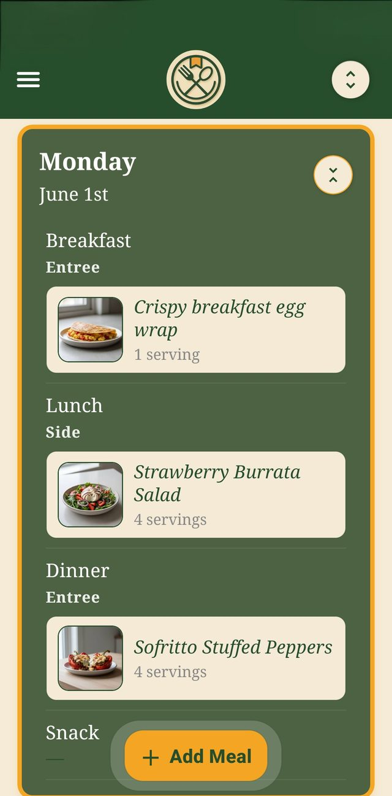
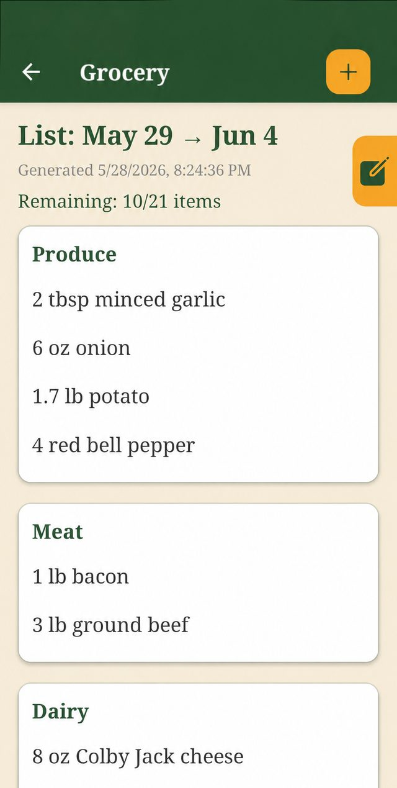

Mealime Shut Down on October 21. Here's Where to Take Your Saved Recipes.
Mealime shut down on October 21. If you saved your favorites in time, here’s where they go next.
Disclosure: Dishlo is not affiliated with, endorsed by, or sponsored by Mealime or Albertsons Companies.
Update, October 22, 2026: Mealime shut down as announced on October 21, and according to its closing notice, users’ personal data was to be deleted at shutdown. If you saved your favorite recipes as screenshots before the cutoff, they’re safe. The “Keep the rhythm going” section below shows the fastest way to put them back to work in Dishlo. If you missed the window, your Mealime collection is gone, but Mealime’s own recipes continue in Meals Hub inside Albertsons’ grocery apps.
What happened
Mealime, the popular meal-planning app, was discontinued on October 21, 2026. Its owner, Albertsons, is moving Mealime’s recipes into “Meals Hub” inside its grocery store apps.
There’s a catch users are already hitting: Meals Hub lives inside Albertsons’ grocery apps, and getting started means picking an Albertsons-family store (Safeway, Vons, Jewel-Osco, and others). Mealime’s own FAQ says you can still browse, plan, and build lists without shopping at one, but plenty of longtime users don’t want their meal planning living inside a grocery chain’s app at all, and the store-selection step is already drawing complaints.
The part that mattered most: according to Mealime’s closing notice, all personal data was to be deleted at shutdown, and there was no export tool, not for saved recipes, meal plans, shopping lists, notes, or preferences.
This post isn’t a sales pitch dressed as news. If you saved your Mealime favorites before the cutoff, here’s how to put them back to work. The checklist below was written for rescue week and is kept for reference. The Dishlo sections after it are evergreen.
The pre-shutdown rescue checklist
Written for the week before October 21, kept here for reference.
- Open Mealime now, not later. Once the shutdown happens, your personal collection (the recipes you saved, the plans you made) is gone. There is no “download my data” button coming.
- Pick the 10–20 recipes you actually cook. Don’t try to save everything. Scroll your history and pull the weeknight regulars, the ones you could make from memory. Those are the collection that matters.
- Screenshot each one: ingredients and instructions. Make sure the full ingredient list and every step are visible across your screenshots. If a recipe runs long, take two. Blurry or cropped shots won’t help you later.
- Don’t count on the public recipe pages. Some Mealime recipes may survive on the open web, but your collection (your saves, your notes, your plans) will not. Save your own copies.
- Do it before October 21. After the shutdown, there is nothing to recover.
One more thing: if you saved the recipe links too, note that Mealime’s own recipe pages may not stay up after the shutdown. The screenshots are the copy that counts.
Keep the rhythm going
Once your favorites are safe as screenshots, you need somewhere for them to live, somewhere they turn back into a weekly plan and a grocery list. That’s what Dishlo is built for:
- Bring your screenshots. Add a recipe in Dishlo with a screenshot or photo of a printed page, a PDF, or pasted text. Dishlo reads the text and puts it in front of you to review before you save, and you can edit the recipe afterward. (Dishlo doesn’t import from links. That’s deliberate, since recipes belong to the people who wrote them. Your screenshots are exactly what it needs.)
- Plan your week on a calendar. Drop recipes onto breakfast, lunch, dinner, or snack slots for each day, and set servings per meal.
- Get one grocery list from the whole week. Pick a date range and Dishlo combines every ingredient from your planned meals into a single list that’s deduplicated, unit-converted, and sorted by store category. One trip covers it.
- Shop it and cook it. Shop Mode gives you a big-text, tap-to-check list that keeps your screen awake by default. Cook Mode keeps ingredients and instructions readable while your hands are busy, with a built-in timer and press-and-hold scroll buttons.


Sample recipes and data shown. Recipe images are AI-generated concept visuals.
And since you’ve just watched an app delete everything: your recipes, plans, and lists in Dishlo are private to your account. No ads. We don’t sell your data.
Next step: How to add recipes to Dishlo: the four ways to get your screenshots, photos, PDFs, and pasted text in, what it can’t read, and an easy way to get started.
Who Dishlo isn’t for, honestly
A shutdown is a bad time for fine print, so here it is up front:
- No curated recipe library. Dishlo doesn’t come with recipes and won’t pick them for you. You bring your own. For former Mealime users, that means the screenshots saved before the shutdown.
- No auto-generated meal plans. You plan the week; Dishlo turns the plan into the list.
- No importing from links. Dishlo never pulls recipes from websites. Screenshots, printed pages, PDFs, and pasted text only, deliberately.
- Android only, for now. Dishlo is live on Google Play. An iPhone version is planned, with no date announced.
Dishlo is $6.99/month in the US (price varies by country; taxes may apply), after a 14-day free trial for eligible new subscribers. The subscription auto-renews until cancelled in your Google Play subscription settings. Cancel before the trial ends and you pay nothing. Deleting the app does not cancel your subscription.
Get started
Bring the 20 recipes you actually cook, and let the grocery list write itself.